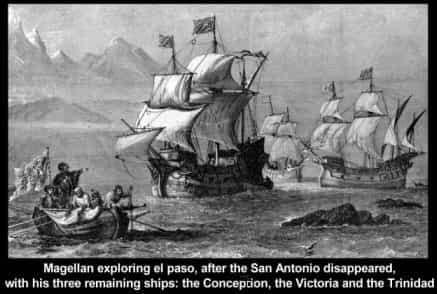
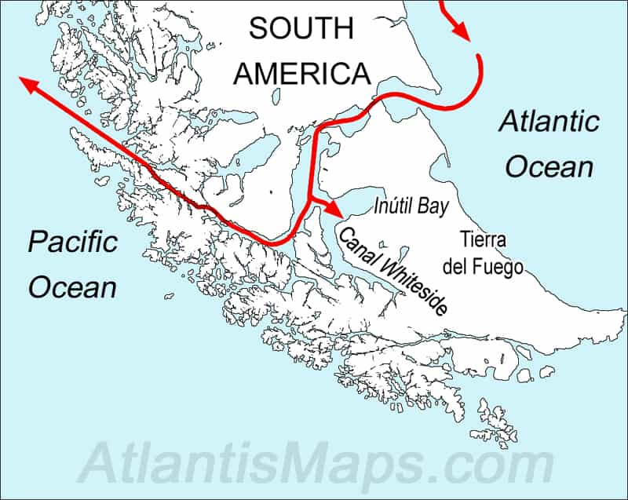

Daryush "Roosh" Valizadeh created ROK in October 2012. You can visit his blog at RooshV.com or follow him on Twitter and Facebook.


This book tells the story of Magellan, the first man to attempt circumnavigation of the world in search of an alternate route to the Spice Islands. It’s a testament to one man’s incredible will above extremely long odds during a period in history where such a journey brought nearly guaranteed death to all those who attempted it.
Originally from Portugal, Magellan defected to Spain after the Portuguese refused to fund his expedition (they already had a secret route to the Spice Islands around Africa). The Spanish monarch, locked out of the spice trade, decided to fund his trip. He was treated poorly by his Spanish peers, facing sabotage and treachery every way he turned. It was a minor miracle his expedition was even allowed to begin.
Their first indigenous contact was in Brazil:
As Magellan’s ships came to rest, a throng of women— all of them naked and eager for contact with the sojourners— swam out to greet them. Deprived of the company of women for months, the sailors believed they had found an earthly paradise. Any fear they might have had of Indian cannibals melted in the flame of carnal pleasure.
[…]
Under the strain of temptation, one of Magellan’s most trusted allies, Duarte Barbosa, who had offered critical assistance when Cartagena mutinied, all but lost his head in Rio de Janeiro. Falling under the women’s spell and envisioning a life of ease as a trader on these distant shores, he decided to desert the fleet. Magellan learned of the plan and intervened at the last minute, sending sailors to arrest Barbosa onshore and drag him back to the ships. The poor man spent the rest of the layover in Rio de Janeiro confined in fetters aboard his ship, gazing on the women and the self-indulgent life that Magellan— and duty— denied him.
This may be the first documented case of poosy paradise, and the predictable effects it had on men.
João Lopes Carvalho, Magellan’s pilot, returning to Brazil after a seven-year absence, happily reunited with his former mistress, who introduced him to their son.
[…]
When the fleet finally weighed anchor and sailed away, Indian women followed them in canoes, tearfully pleading with the men from distant shores to stay with them forever.
[…]
If they were received well, the sailors were ready for orgies, and the priests for conversions; if they were attacked, they were ready for battle.
These men would have been better off staying with their Brazilian mistresses, for few would make it home alive.

The conditions for Magellan’s sailors were deplorable:
When conditions turned hot and humid, the insects infested the clothing, the sails, the food supply, and even the rigging. The sailors scratched and complained, but they had no defense against the pests. Even worse, weevils invaded the hardtack, and it was further contaminated with the urine and feces of rodents. Crew members with growling stomachs forced themselves to overcome their inhibitions and swallow this disgusting, contaminated provender.
[…]
…the heavy weather stranded a landing party already ashore, this time with no “sea wolves” to provide shelter or warmth. Enduring bone-chilling cold, their skin and hair and beards soaked constantly with freezing rain, their fingers and toes numb, the men forced themselves to forage for shellfish in the freezing water. Their hands bleeding, they smashed the shells and survived on the raw flesh until, nearly a week later, they were able to return to the fleet.
As the voyage dragged on, and the Spice Islands were yet to be found, Magellan had to deal with a mutinous crew. He was successful:
A crucial evolution of Magellan’s style of leadership, and perhaps his character, occurred over a period of nine trying months, from February to October 1520. He emerged from the ordeal a very different man from the one who had begun the voyage. The Magellan of February teetered on the brink of being murdered by the men he commanded. The Magellan of October was on the way to earning a place in history. In the intervening months, he passed a series of tests that forced him to confront his own limits as a leader and to change his ways, or die.
When the impossibly navigable Straits were found, and the Pacific Ocean was within reach, Magellan did not rush the job. He took his time through them to prevent disaster at the critical moment.
His sophisticated approach to navigating uncharted waters went far beyond technical ability in boat handling and direction finding; it revealed an ability to deploy novel tactics to overcome one of the great challenges of the Age of Discovery: namely, how to guide a fleet of ships through hundreds of miles of unmapped archipelagos in rough weather. Magellan’s skill in negotiating the entire length of the strait is acknowledged as the single greatest feat in the history of maritime exploration. It was, perhaps, an even greater accomplishment than Columbus’s discovery of the New World.

The Straits of Magellan
But such a burden was too great for one man, and he started to lose his faculties, going mad with power and coming to think of himself as a messenger of Christ who was destined to convert native populations. He was angered when one particular tribe refused to bow to his will. Feeling invincible in possession of European steel against puny wooden weapons, he began a foolhardy battle that resulted in his death.
Magellan, normally possessed of superhuman determination and indifference to hardship, became depressed and unstable as the transpacific crossing wore on. In a rage, he flung his useless maps overboard, crying, “With the pardon of the cartographers, the [Spice Islands] are not to be found in their appointed place!”
[…]
…he could not fail to notice that his weapons conferred absolute power over the islanders, should he ever feel the need to exert it.
[…]
Magellan gave an even more astonishing demonstration as he brought out one of his men, who was dressed in armor from his knees to his neck; then three other Europeans, “armed with swords and daggers… struck him on all parts of the body.” As the blows fell and glanced off the armor, the clank of metal on metal echoing across the water, “the [indigenous] king was rendered speechless.” The king seemed to think that these visitors possessed superhuman powers. No man could have withstood the shower of blows, yet the armored soldier had done just that.
[…]
In the course of the voyage, Magellan had managed to outwit death many times. He overcame natural hazards ranging from storms to scurvy, and human hazards in the form of mutinies. In the end, the only peril he could not survive was the greatest of all: himself.
As shown in previous reviews of long sea journeys, it is clear that strict discipline is paramount. The reason it’s so common to hear of cruel captains is because a mistake can cause the entire ship to be lost. There is very little room for error.
Less than 10% of the original crew made it back to Spain, in only one ship instead of the original fleet of five. It took 58 years for the circumnavigation to be duplicated by Francis Drake after several disastrous failures.
The [crew], for the most part, were ordinary men, many still in their twenties or even younger, the overlooked servants of more powerful officers and specialists. No matter what their status, they had surveyed more of the world than anyone else before them; by accident or design, their names belong among history’s great explorers.
I couldn’t help but feel jealous as I read this book. These men were first to sail around the world and first step on new lands. Today, the only thing men race to be first in is to get in line when a new iPhone is released. Overall this book is a page turner that I thoroughly enjoyed. May we all have the opportunity for our own great discovery.
Read More: “Over The Edge Of The World” on Amazon